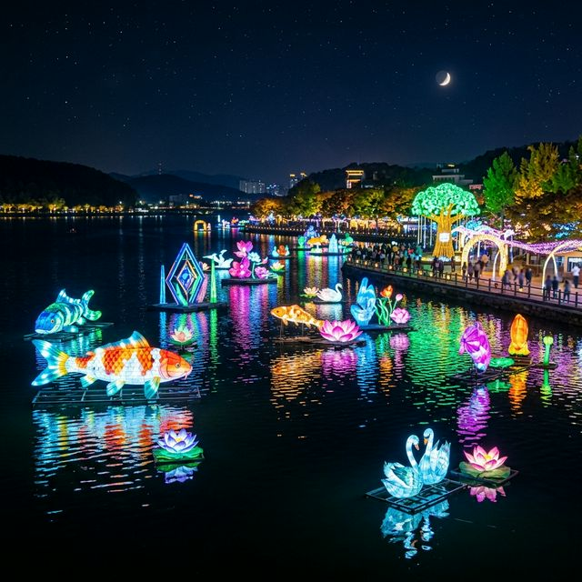
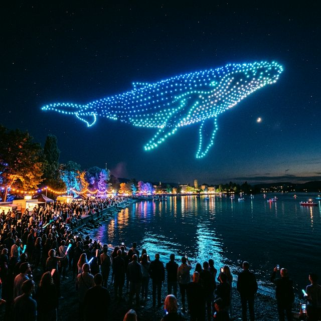
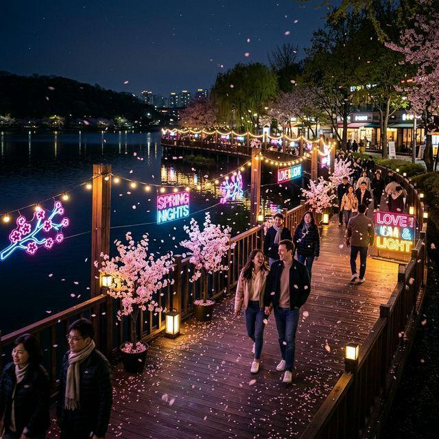

2026년 4월 4일부터 18일까지 이어지는 이번 대덕물빛축제는 대전광역시 대덕구의 대청공원(중앙잔디광장)을 중심으로 펼쳐집니다. 올해 축제의 핵심 키워드는
'치유와 희망'입니다. 대청호라는 천혜의 자연경관에 최첨단 ICT 기술을 접목하여 관람객들에게 시각적인 즐거움과 함께 정서적인 위로를 건네는 것이 목적이죠. 밤 11시까지
운영되는 축제장은 은은한 음악과 함께 화려한 조명들이 어우러져 낮과는 전혀 다른 반전 매력을 선사합니다.
축제장에 들어서면 가장 먼저 거대한 고래 형상의 조형물이 여러분을 맞이합니다. 이는 대덕구의 상징이자 꿈을 향해 나아가는 역동성을 의미하죠. 2026년에는 영상과 조명을 활용한 인터랙티브 아트 구역이
대폭 늘어나, 관람객이 움직일 때마다 빛의 파동이 일어나는 신비로운 경험을 할 수 있게 되었습니다. 가족 단위 방문객뿐만 아니라 연인들의 데이트 코스로도 손색없는 완벽한 봄밤의 축제입니다.

축제장의 메인 로드는 '물빛 테마파크'로 조성되어 있습니다. 이곳에서는 각양각색의 고래 조형물들이 밤하늘을 유영하는 듯한 모습을 연출합니다. 2026년에는 '심해의
신비'를 주제로 한 조명 터널이 새롭게 추가되었는데, 푸른 보랏빛 광섬유들이 머리 위로 쏟아질 듯 내려오는 광경은 마치 바닷속을 걷는 듯한 착각을 불러일으킵니다. 사진기 셔터를 누르는 곳마다 인생샷이
완성되는 마법 같은 공간입니다.
아이들이 가장 좋아하는 구역은 '꿈꾸는 벚꽃길'입니다. 이제 막 꽃잎이 흩날리기 시작한 벚꽃 나무 사이에 반딧불이를 연상시키는 조명들이 설치되어, 마치 숲속 요정들이
튀어나올 듯한 분위기를 자아냅니다. 산책로를 따라 흐르는 잔잔한 호수 소리는 마음을 차분하게 만들어주며, 화려한 조명 사이사이 마련된 벤치에 앉아 잠시 명상에 잠기기에도 좋습니다.
대덕물빛축제의 하이라이트는 단연 드론 라이트 쇼입니다. 500대 이상의 드론이 호수 위 밤하늘로 솟구쳐 올라 대덕구의 마스코트와 고래, 그리고 봄꽃의 형상을 그려내는
장면은 관람객들의 탄성을 자아내기에 충분합니다. 음악에 맞춰 일사불란하게 움직이며 색상을 바꾸는 드론들의 움직임은 지상의 불꽃놀이보다 더 정교하고 우아한 감동을 선사하죠.
2026년 드론 쇼는 매주 금요일과 토요일 저녁 8시에 시작됩니다. 쇼의 명당은 중앙 잔디광장 앞쪽이며, 공연 시작 30분 전에는 자리를 잡아야 전체적인 대형을 제대로 감상할 수 있습니다.
환경 오염 없는 디지털 불꽃놀이라는 점에서 더욱 의미 있는 이 행사는, 기술이 예술로 승화되는 순간을 목격하게 해줄 것입니다. 드론 쇼가 끝난 직후에는 불꽃쇼도 잠시
이어지니 끝까지 자리를 지키시길 바랍니다.

축제와 함께 즐기기 좋은 코스로는 대청호 오백리길 1구간의 일부를 걷는 야간 트레킹을 추천합니다. 대청공원에서 수변 데크를 따라 이어진 이 길은 완만한 평지로 되어 있어
슬리퍼를 신고도 편안하게 걸을 수 있습니다. 축제 기간에는 숲길을 따라 은은한 잔디 조명이 켜져 있어 안전하면서도 낭만적인 분위기를 만끽할 수 있습니다.
숲길 너머로 어슴푸레 비치는 대청호의 야경은 도시의 밤과는 다른 정적인 고요함을 선물합니다. 중간중간 배치된 '사랑의 우체통'이나 포토존에서 잠시 멈춰 서서 서로의 모습을
담아보세요. 특히 '숫사자 바위' 부근에서 바라보는 축제장의 전체 전경은 화려한 보석함이 열린 듯한 환상적인 뷰를 보여줍니다. 약 2km 정도의 구간이니 30분 정도 천천히 걸으며 봄밤의 정취를 깊게
들이켜 보세요.
빛만 있는 것이 아닙니다. 축제 기간 중 주말에는 '대덕 락 페스티벌'이 함께 열려 현장의 열기를 더합니다. 국내 유명 밴드와 대전 지역의 인디 뮤지션들이 참여하는 이
공연은 야외 잔디광장에서 자유롭게 앉아 즐길 수 있는 피크닉 형태의 콘서트입니다. 벚꽃 흐드러진 무대 위로 흐르는 시원한 락 사운드는 봄날의 에너지를 200% 충전시켜 주기에 충분합니다.
관객들은 개인 돗자리를 준비해 와서 가족들과 간식을 먹으며 공연을 즐깁니다. 2026년에는 청각 장애인을 위한 '배리어 프리(Barrier-free)' 환경이 구축되어, 수어 통역과 진동 팔찌 등을
통해 누구나 음악을 온전히 느낄 수 있도록 배려한 점이 돋보입니다. 음악과 빛, 그리고 사람이 하나 되는 이 광장은 축제의 가장 생동감 넘치는 심장부가 될 것입니다.

대규모 축제에 빠질 수 없는 즐거움, 바로 먹거리입니다. 대청공원 한편에는 푸드트럭 빌리지가 조성되어 있습니다. 스테이크, 츄러스, 닭강정 등 인기 간식부터 대전의 로컬
식재료를 활용한 창의적인 메뉴들까지 한자리에 모였습니다. 특히 올해는 대덕구 전통시장의 맛집들이 직접 부스를 운영하여 상생의 의미를 더했습니다.
축제장 특유의 비싼 가격 대신 합리적인 가격제를 도입하여 방문객들의 부담을 줄였습니다. 모든 공간이 깔끔하게 관리되고 있으며, 지정된 식사 공간에서는 대청호의 야경을
바라보며 분위기 있는 야식을 즐길 수 있습니다. 환경을 위해 일회용품 사용을 줄이는 캠페인에 동참하여 개인 텀블러를 지참하시면 음료 할인 혜택도 받을 수 있으니 참고하세요.
대덕물빛축제는 대전 시민뿐만 아니라 타지에서도 많은 사람이 찾기에 교통 정체에 대비해야 합니다. 주말 저녁에는 대청호로 진입하는 도로가 많이 밀리므로, 가장 추천하는
방법은 '신탄진역' 인근 임시 주차장에 차를 세우고 셔틀버스를 타는 것입니다. 셔틀버스는 15분 간격으로 운행되어 주차 걱정 없이 빠르게 행사장 내부에 진입할 수 있게 해줍니다.
자차 이용 시에는 대청공원 주차장을 이용해야 하는데, 오후 6시 이전 도착을 목표로 하시는 것이 좋습니다. 2026년에는 T맵 등 내비게이션 앱과 연동하여 혼잡 시간대를
미리 알려주는 서비스가 운영 중이니 출발 전 체크는 필수입니다. 또한, 전기차 사용자를 위한 급속 충전 시설도 대폭 확충되었으니 전기차 오너분들도 안심하고 방문해 보세요.
2026년 대덕물빛축제의 또 다른 특징은 오프라인과 온라인을 잇는 메타버스 체험입니다. 축제장 현장에 설치된 QR 코드를 찍으면 스마트폰 속 가상 공간에서도 동시에 축제를
즐길 수 있습니다. 증강현실(AR) 기술을 통해 눈앞에 보이지 않는 고래들을 수집하거나, 디지털 보물찾기에 참여하여 근처 식당 할인권을 받는 등의 이벤트가 준비되어 있습니다.
이 디지털 연동 시스템은 특히 MZ세대 관람객들에게 큰 인기를 끌고 있습니다. 현실의 화려한 빛과는 또 다른 디지털 아트의 세계를 경험할 수 있는데, 스마트폰 렌즈를 통해
바라보는 대청호는 더욱 환상적인 필터가 입혀져 보입니다. 현장 곳곳에는 무선 인터넷(Free Wi-Fi) 존이 강화되어 있어 데이터 걱정 없이 다양한 디지털 콘텐츠를 즐길 수 있습니다.
축제 관람 전후로 대전의 다른 명소들도 둘러보세요. 축제장에서 멀지 않은 신탄진 벚꽃길은 대전의 숨은 벚꽃 명소로, 금강변을 따라 이어진 나무들이 터널을 이룹니다. 또한,
대전의 자랑인 '성심당' 신탄진점이나 맛집 거리를 방문해 대전 특유의 맛을 느껴보는 것도 여행의 즐거움을 더해줄 것입니다.
시간이 넉넉하다면 장태산 자연휴양림의 메타세쿼이아 숲을 방문해 보시길 권합니다. 이국적인 정취와 함께 숲 체험관, 스카이 타워 등 볼거리가 많아 대덕물빛축제의 야경과는
상반된 대자연의 초록 에너지를 얻을 수 있습니다. 이번 기회에 '노잼 도시'라는 오명을 벗고 매력 넘치는 '꿀잼 도시' 대전의 진면목을 확인해 보시길 바랍니다.
빛은 어둠 속에서 더욱 선명하게 존재감을 드러냅니다. 2026년 대덕물빛축제는 우리가 잃어버렸던 꿈과 낭만을 일깨워주는 화려한 등대와 같습니다. 차가운 겨울을 지나 따스한
봄밤, 대청호의 잔잔한 물결 위에 띄워진 수만 개의 조명은 각자의 삶에서 고군분투하는 우리 모두에게 수고했다는 무언의 메시지를 전하는 듯합니다.
사랑하는 가족, 연인, 혹은 나 자신과 함께 이 평화로운 빛의 정원을 걸어보세요. 고래가 자유롭게 유영하는 밤하늘 아래서 나누는 진심 어린 대화는 여러분의 봄날을 더욱 향기롭게 만들어줄 것입니다.
축제는 곧 끝나겠지만, 그날 밤 대청호에서 본 환상적인 빛의 조각들은 여러분의 마음속에 오래도록 밝게 빛날 것입니다. 대전의 봄밤으로 여러분을 초대합니다!